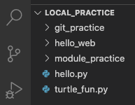

18.2. Repositories and Commits¶
To use all of the tools and benefits of Git, we need to set up a repository for each new project we create. Once we do that, the next step is learning how to save and track our changes.
18.2.1. Create a Repository¶
To create a Git repository, we will use Visual Studio Code, the terminal, and a series of specific commands.
Try It!
Follow these steps to create your first repository (called a repo for short).
Launch Visual Studio Code and open the
local_practicefolder you created in the last chapter.Use the buttons in the File Explorer to create a new directory called
git_practice.Our new file tree for local_practice.¶
Open the terminal panel if it’s not already there. Use it to navigate into the new
git_practicedirectory.1 2 3 4 5
$ ls git_practice hello.py hello_web module_practice turtle_fun.py $ cd git_practice $ pwd /Users/username/Desktop/local_practice/git_practice
Finally, initialize the new repository with the command
git init.6 7
$ git init Initialized empty Git repository in /Users/username/Desktop/local_practice/git_practice/.gitNotice
.gitat the end of the file path on line 7. This is the name for a hidden directory that stores the repository data. The folder won’t appear in our file tree, but we can see it if we use the terminal commandls -a.
Tip
Sometimes programers accidentally enter the git init command when they
are inside the wrong directory. This initializes a new repository where it
doesn’t belong.
No worries! The solution is quick. Just delete the .git directory using
the terminal and the rm command.
1 2 3 4 5 | $ pwd
/Users/username/wrong_directory
$ ls -a
. .. .git oops.py
$ rm -rf .git
|
After that, move to the correct directory and use git init again.
We are now set up to have Git track all changes made inside the
git_practice folder. Let’s make some changes and see how to track our
project!
18.2.2. Making Commits¶
Right now, git_practice is empty. However, the version control is already
tracking the directory. We can see this by trying out a second Git command in
the terminal:
1 2 3 4 5 6 | $ git status
On branch main
No commits yet
nothing to commit, create/copy files and use "git add" to track
|
We will deal with On branch main later in this chapter, but the next two
lines deserve some attention.
Line 4 tells us that we have made
No commits yet. A commit is an update recorded in the repo. If we think of the repository as a container, then the commits are smaller containers stacked on top of each other inside the repo. Each commit includes a timestamp and a copy of all the files as they existed at that time. The deeper we dig down inside a repository, the farther back in time we go.Line 6 tells us, Hey, if you want to track your project, you need to put something in this directory!
Let’s add a new file to the git_practice folder and then make our first
commit.
Try It!
In VS Code, complete the steps described in the next three sections.
18.2.2.1. Step 1: Make a Change¶
Using either the terminal or the buttons in VS Code, create the file
num_guess.pyin thegit_practicefolder. This action makes a change to the repository.In the terminal, make sure you are in the
git_practicefolder.Enter the command
git status.1 2 3 4 5 6 7 8 9 10 11 12 13
$ pwd /Users/username/Desktop/local_practice/git_practice $ git status On branch main Initial commit Untracked files: (use "git add <file>..." to include in what will be committed) num_guess.py nothing added to commit but untracked files present (use "git add" to track)
The git status command returns information about two types of changes:
modified tracked files and modified untracked files. Tracked means that
the file already exists in the Git repository. Untracked means that the file
is not currently in the repo.
Since we just added num_guess.py, lines 8 - 11 list it as an untracked
file. Line 13 tells us about changes found in the git_practice directory,
but the updates are not set up as part of the tracking. The output also gives
us a clue about what we need to do next.
18.2.2.2. Step 2: Add Changes to a Commit¶
Currently, Git notices num_guess.py, but it will NOT track the changes we
make to the file yet. Our next step is to add the file to the tracking record
to make it part of our first commit.
In the terminal, use the command
git add .(The period is part of the command).Follow this with
git statusto see what happens as a result.1 2 3 4 5 6 7 8 9 10
$ git add . $ git status On branch main Initial commit Changes to be committed: (use "git rm --cached <file>..." to unstage) new file: num_guess.py
The command git add . takes ALL of the tracked and untracked files in the
current directory and adds them to the commit. We only have one change this
time, but later on the list will be longer.
Lines 7 - 10 tell us that num_guess.py will be included in the repository
once we finish the commit.
Note
If we have a long list changes and only want to add a few of them to the
commit, we can do that. Just replace the . with a list of specific file
names.
18.2.2.3. Step 3: Commit the Changes¶
The last step of the commit process is to give the saved changes a description and add them to the repository.
In the terminal, enter the command git commit -m "My first commit."
1 2 3 4 | $ git commit -m "My first commit."
[main (root-commit) 84310df] My first commit.
1 file changed, 0 insertions(+), 0 deletions(-)
create mode 100644 num_guess.py
|
The
git commitcommand creates a new commit in the repository. It contains all of the files that we created or modified since our last commit.The
-msyntax adds a message to the commit. The message itself follows the-mand is inside quotation marks. In this case, we added the comment"My first commit."Using the
-mfeature is helpful because it lets us leave notes for when we look back into the history. ALWAYS add detailed comments to describe the changes made in each commit.
Note that line 3 in the output gives us some details about the changes we just
saved to the repository. 0 insertions(+), 0 deletions(-) means we
modified no lines inside the file. This makes sense, because all we did was
to create the new Python file. We haven’t added any code to it yet.
18.2.3. Make Another Commit¶
In
num_guess.py, use therandommodule to select an integer from 1 - 100. Print that number to the console.Once you have your program running, save your work and go through the commit process again. The terminal output will look something like this:
1 2 3 4 5 6 7 8 9 10 11 12 13
$ git status On branch main Changes not staged for commit: (use "git add <file>..." to update what will be committed) (use "git checkout -- <file>..." to discard changes in working directory) modified: num_guess.py no changes added to commit (use "git add" and/or "git commit -a") $ git add . $ git commit -m "Added random number selection code." [main 9bdcaab] Added random number selection code. 1 file changed, 4 insertions(+)
You now have two sets of changes recorded in your Git repository.
Lines 3 - 7 show the changes Git found since our first commit. Since we set up
tracking for num_guess.py earlier, the file is listed as modified. Line
10 adds all of the changes found in the directory. Line 13 summarizes the
changes saved to this commit. The output will vary depending on what you did
in num_guess.py, but in this example 4 new lines were added to 1 file.
18.2.4. When to Commit Changes¶
As we take a project from start to finish, we will make lots of changes and save our files many times over. How often should we add commits to the repository?
Note
Git does NOT automatically save changes to a project! To update the repo, we
must use the git status, git add ., and git commit -m commands
in the terminal.
The general rule of thumb is that any time we make a significant change to the project, we should also do a commit. This includes things like:
The initial setup when we make our new project directory and add the first empty file.
After we add a new, working feature (loop, function, module, HTML/CSS, etc.) to our code.
Just before we share our project with another developer, especially if they want to modify the code.
There is nothing wrong with making lots of tiny commits. However, there will be a problem if we make too few. Commit early, and commit often!
Imagine we are working on a big project, and we’re almost done. Unfortunately, somewhere along the line we created some logic errors. Now imagine that the debugging causes other problems in the program. Frustrating! However, if we made plenty of commits to the repository, one solution is to search through the history and find a spot BEFORE we introduced the errors. We can then restore that working version and move on from there.
If we didn’t make any commits, then we might just have to start all over again. Many developers have ignored version control and regretted it later!
{kind=link}
Tip
NEVER commit broken code! If your program isn’t working, then don’t save it as part of the version control.
You want your version history to be clean. Saving a bug means that if you roll back to that earlier version, you will need to re-fix the same error.
18.2.5. Commit Process Summary¶
The procedure for making a commit to a Git repository includes 4 stages.
Make one or more changes to the project files.
Use
git statusto see information about files that have been changed.Use
git addto include some or all of the changed files to the commit.Use
git commit -m "Notes..."to create the new commit (with a message) in the repo.
Warning
git add only collects a list of changes that need to be recorded. It
does NOT save them to the repository. Remember to follow git add with
git commit -m.
18.2.6. Check Your Understanding¶
Question
Which command creates a new repository?
-
git add . -
git init -
git commit -m "notes..." -
git status
Question
Which command saves a group of changes to an existing repository?
-
git add . -
git init -
git commit -m "notes..." -
git status